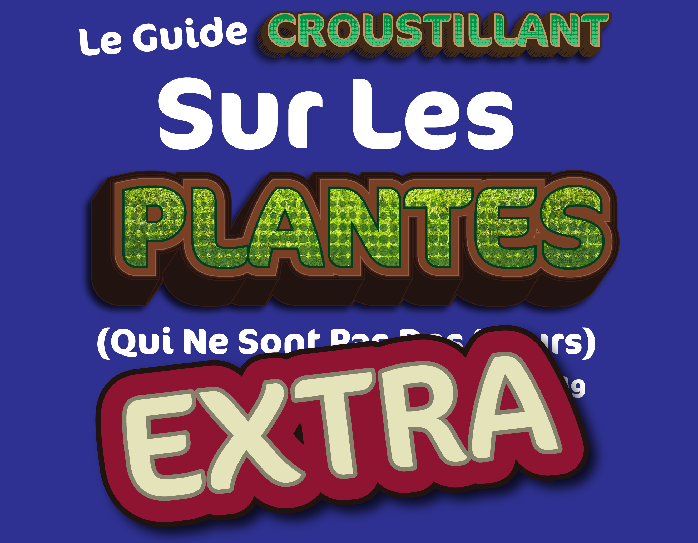
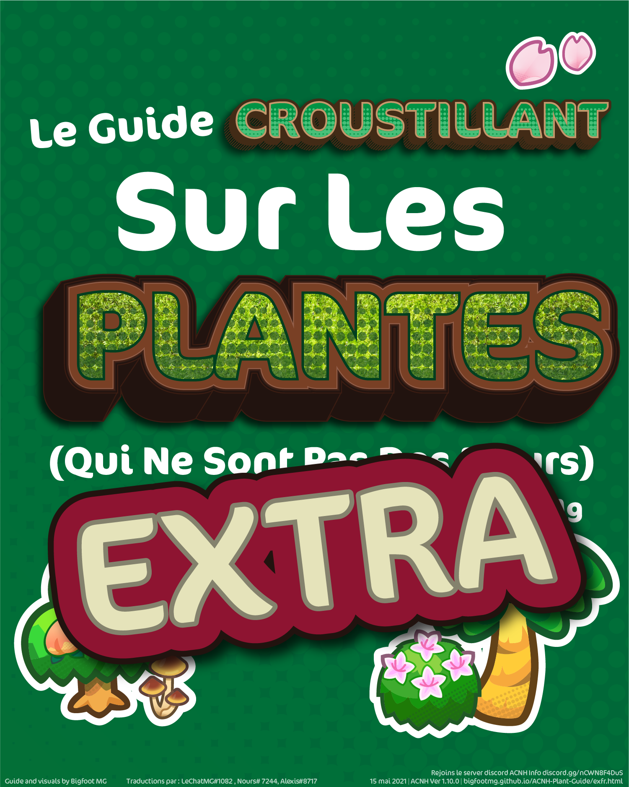
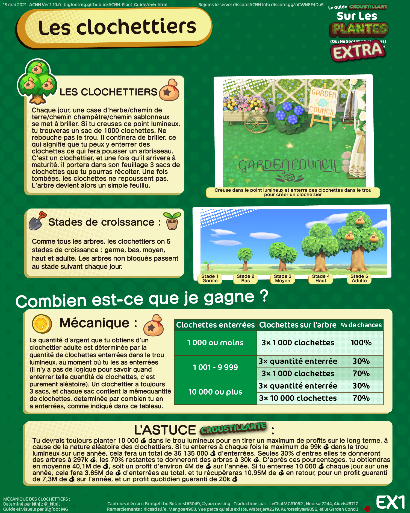
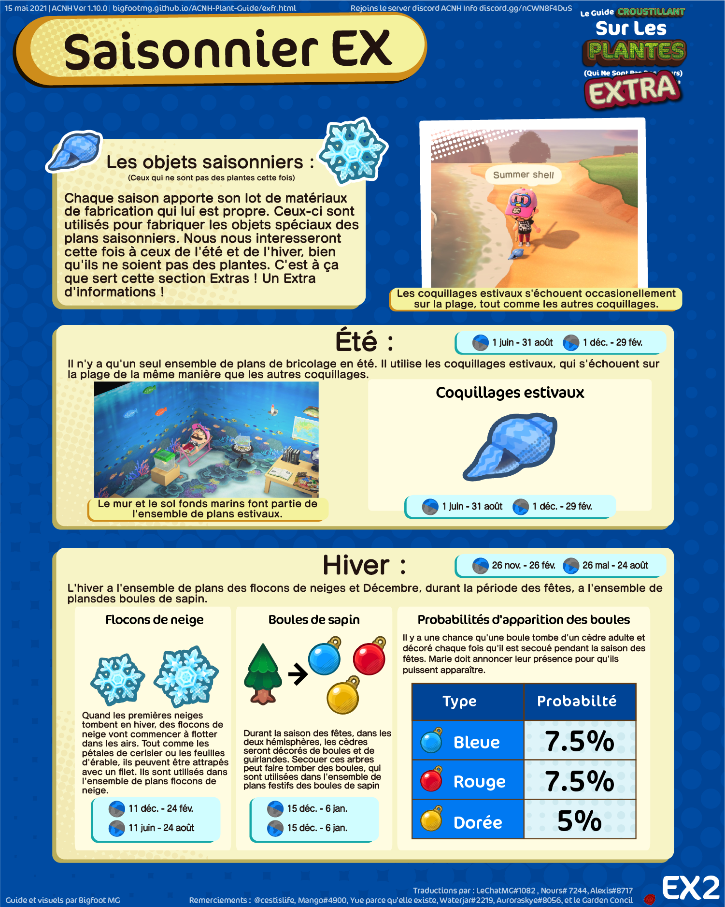
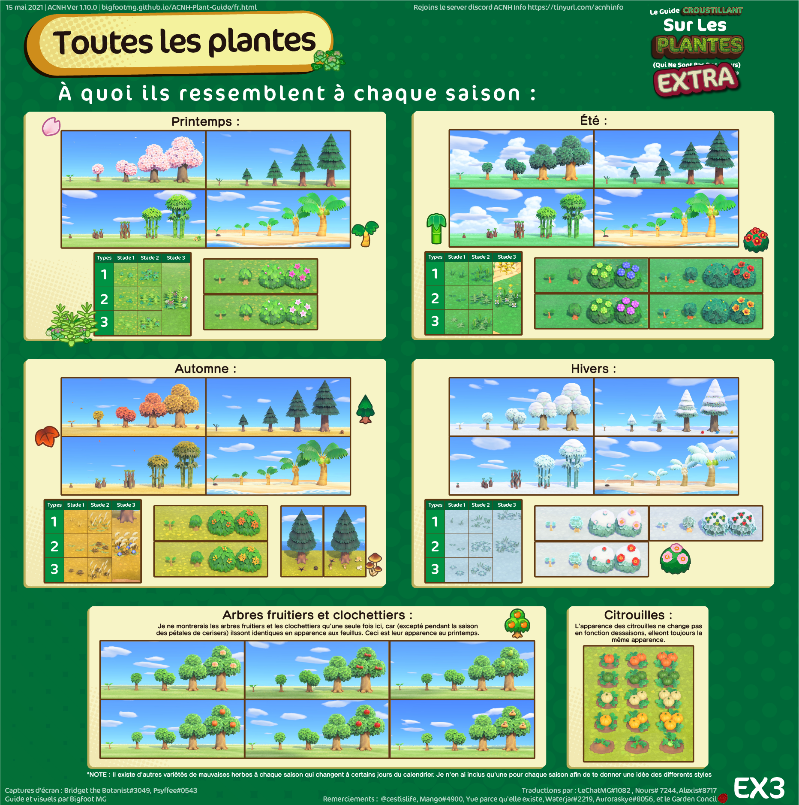
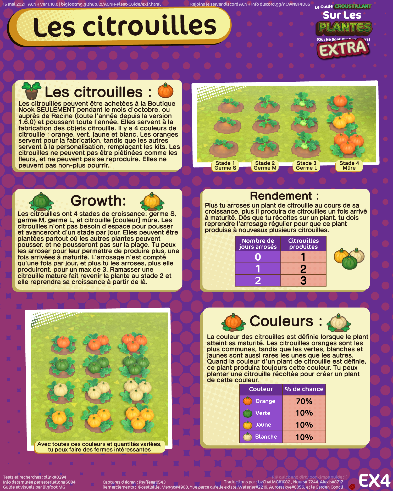
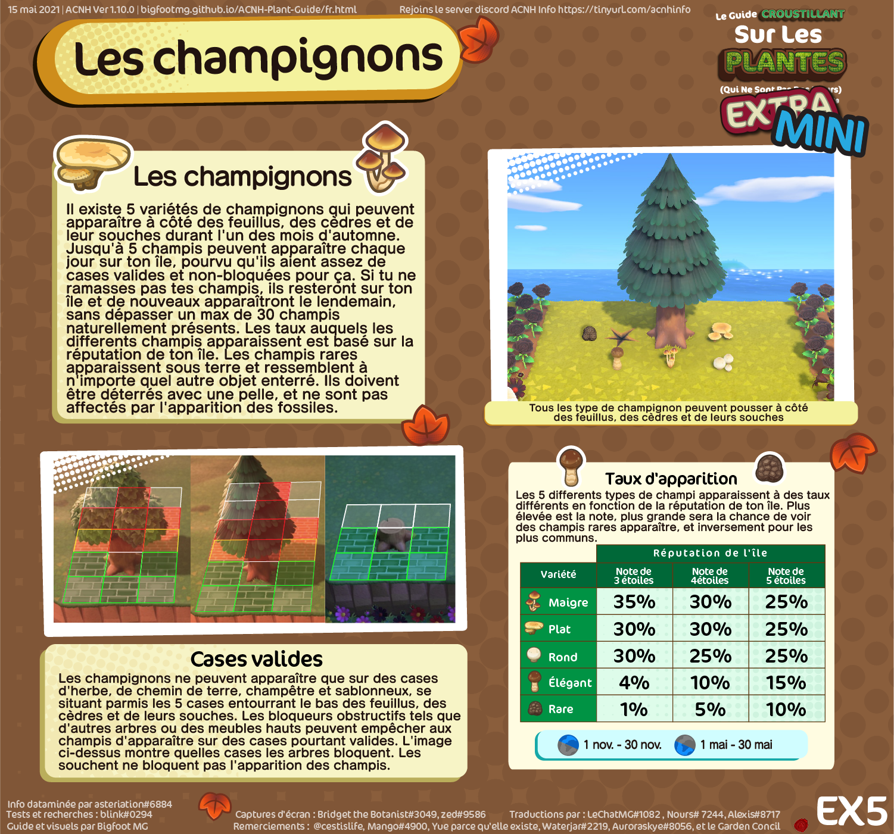
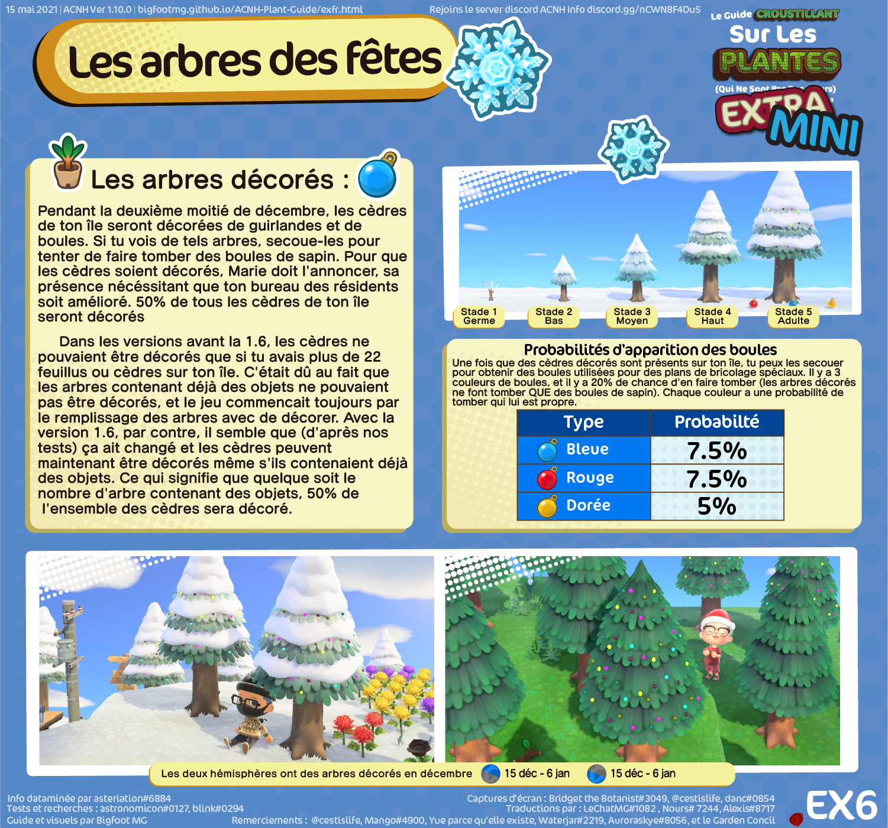

Accueil
Clochettiers
Saisonnier EX
Toutes les plantes
Citrouilles
Champignons
Boules de sapin
Join the
ACNH Info discord server
for more resources about ACNH, or to chat or ask questions!







Retour au début